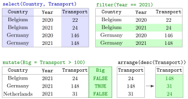

Core dplyr Verbs¶
Definition¶
The dplyr verbs are functions that each perform one operation on a table. They take a data frame or tibble as their first argument, refer to its columns by bare name, and return a new tibble (except pull()):
| Verb | What it does |
|---|---|
select(Country, Year) |
keep the named columns |
filter(Year == 2021) |
keep the rows for which the condition is TRUE |
mutate(Total = A + B) |
add a column, or overwrite one with the same name |
arrange(Country, desc(Year)) |
sort the rows; desc() reverses the order |
rename(Fuel = Fuel_Exploitation) |
rename a column (new name on the left) |
distinct(Country) |
keep the distinct values or combinations |
pull(Country) |
extract one column as a vector |
Inside mutate(), case_when(cond1 ~ value1, cond2 ~ value2, TRUE ~ default) builds a column from conditions checked in order, and tidyr's replace_na(x, 0) replaces missing values by a fixed value.
Interpretation¶
Each verb answers one question about the table: which columns, which rows, which new variables, in which order. Because every verb takes a table and returns a table, verbs chain naturally with the pipe, and a whole analysis reads as a list of steps.

The figure applies four verbs to rows of the table used in the Examples. select() works on columns (shaded blue) and never changes the number of rows. filter(Year == 2021) works on rows (kept rows shaded green) and never changes the columns. mutate(Big = Transport > 100) adds a column (green) with one value per row: FALSE, TRUE, FALSE for the transport values 24, 148 and 31 of 2021. arrange(desc(Transport)) keeps everything but changes the order, here to 148, 31, 24.
The condition in filter() is a comparison that gives one TRUE or FALSE per row, exactly like logical subsetting df[df$Year == 2021, ] in base R, and several conditions are combined with & and | (logical operators). There is one difference: a row where the condition is NA is dropped by filter(), while base R returns a row full of NA. case_when() is a multi-branch version of the vectorized ifelse(); its conditions are checked from top to bottom and the first one that holds decides, so the order of the lines matters.
The most common mistake is writing filter(Year = 2021) with a single =. That is an argument name, not a comparison, and dplyr stops with an error that suggests == (Example 4). A second one is forgetting that mutate() returns a new table: without co2 <- co2 %>% mutate(…) the new column is printed and then lost.
Key Results¶
select()andrename()change only columns;filter()andarrange()change only rows;distinct()removes repeated rows and, unless.keep_all = TRUE, keeps only the columns it was given;mutate()adds or overwrites columns and keeps the number of rows.filter(cond1, cond2)andfilter(cond1 & cond2)are the same; rows where a condition evaluates toNAare dropped.arrange()sorts ascending;desc(x)sorts descending; missing values are placed last in both cases.- Arithmetic in
mutate()follows the usual missing value rule:A + BisNAwheneverAorBisNA. - In
case_when()the first true condition wins; the last lineTRUE ~ valuecatches all remaining rows. - None of the verbs modifies its input; assign the result with
<-to keep it.
Examples¶
All examples use this small made-up extract of an emissions table:
library(tidyverse)
co2 <- tibble(
Country = c("Belgium", "Belgium", "Germany", "Germany", "Netherlands", "Netherlands"),
Year = c(2020, 2021, 2020, 2021, 2020, 2021),
Transport = c(22, 24, 146, 148, 30, 31),
Buildings = c(20, 21, 110, 115, 25, 24),
Waste = c(2.1, 2.3, 10.4, 9.8, 4.2, NA)
)
1. Rows and columns. The most recent observation for the Netherlands, and the transport emissions of all countries in 2021:
co2 %>% filter(Year == max(Year) & Country == "Netherlands")
#> # A tibble: 1 × 5
#> Country Year Transport Buildings Waste
#> <chr> <dbl> <dbl> <dbl> <dbl>
#> 1 Netherlands 2021 31 24 NA
co2 %>% filter(Year == 2021) %>% select(Country, Transport)
#> # A tibble: 3 × 2
#> Country Transport
#> <chr> <dbl>
#> 1 Belgium 24
#> 2 Germany 148
#> 3 Netherlands 31
2. A new column, then sorting. The total over the three sectors, largest first:
co2 %>%
mutate(Total = Transport + Buildings + Waste) %>%
select(Country, Year, Total) %>%
arrange(desc(Total))
#> # A tibble: 6 × 3
#> Country Year Total
#> <chr> <dbl> <dbl>
#> 1 Germany 2021 273.
#> 2 Germany 2020 266.
#> 3 Netherlands 2020 59.2
#> 4 Belgium 2021 47.3
#> 5 Belgium 2020 44.1
#> 6 Netherlands 2021 NA
The tibble prints three significant digits, so appears as 273.. The Netherlands total for 2021 is NA because its waste value is missing, and arrange() puts it last.
3. Categories with case_when(). Label transport emissions as low (below 25), medium (25 to 100) or high:
co2 %>%
mutate(Level = case_when(Transport < 25 ~ "low",
Transport <= 100 ~ "medium",
TRUE ~ "high")) %>%
pull(Level)
#> [1] "low" "low" "high" "high" "medium" "medium"
For Transport = 30 the first condition fails and the second holds, so the label is "medium"; the second line does not need Transport >= 25 because rows below 25 were already taken by the first line.
4. Pitfall: = instead of ==, and rows with NA.
co2 %>% filter(Year = 2021)
#> Error in `filter()`:
#> ! We detected a named input.
#> ℹ This usually means that you've used `=` instead of `==`.
#> ℹ Did you mean `Year == 2021`?
co2 %>% filter(Waste > 3) %>% pull(Country)
#> [1] "Germany" "Germany" "Netherlands"
co2 %>% mutate(Waste = replace_na(Waste, 0)) %>% filter(Waste <= 3) %>% nrow()
#> [1] 3
The Netherlands row for 2021 is in neither filter(Waste > 3) nor filter(Waste <= 3): its condition is NA, so filter() drops it from both. Only after replace_na() sets the missing value to 0 does it count as "at most 3", next to the two Belgian rows. Whether a missing value may be treated as zero is a decision about the data, not a programming detail.
Prerequisites¶
Related Concepts¶
- Grouped Summaries
- Pivoting Between Wide and Long Data
- Relational Joins
- Logical Subsetting
- Vectorized ifelse()
Sources¶
- Programming for EOR · Week 4
- Lecture 4 script, Data Wrangling with the tidyverse & Visualisation with ggplot2: Core dplyr Verbs; Week 4 solutions, exercises 1–3
Aliases: dplyr, select(), filter(), mutate(), arrange(), desc(), rename(), distinct(), pull(), case_when(), replace_na(), dplyr verbs Keywords: select and filter, mutate, arrange and desc, case_when(), one verb, one task
Last updated: 10 November 2026 16:43
Core dplyr Verbsggplot2 and the Grammar of GraphicsGrouped SummariesRelational JoinsPivoting Between Wide and Long DataTibblePipe OperatorComparison OperatorsLogical OperatorsMissing ValuesLogical SubsettingVectorized ifelse()